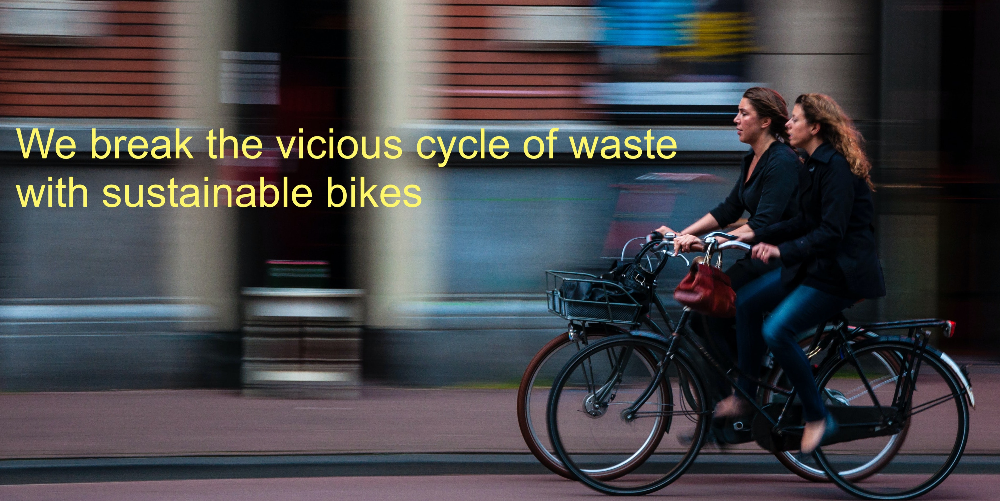

Vicious Cycles of Durham, NC, exclusively sells sustainable bikes and parts. Cycling is a sustainable way to get where you’re going, so we are focused on making sure your journey is as sustainable as possible. Our shop has bikes from Detroit Bicycles and Booomers, a unique bamboo bicycle maker from Ghana.
Working with local businesses we are reframing biking to work as a work benefit. A participating business can set up a voucher program so that employees can receive a bike, safety lights, and a helmet at no charge. If you are a business or employee interested in becoming part of the program, contact us.